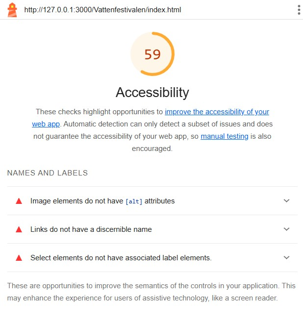
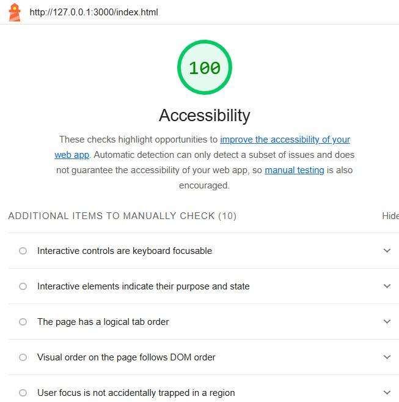

Nya vattenfestivalen
The concept of a new (or reborn) music festival in Stockholm, and a responsive website with dynamic content.
Timeline
2 weeks (2025)
Goal
To design and code an accessible website with a clear visual concept for a music festival in Stockholm, and fetch data about the festival from an API.
Context

Links
CodeLive-demo
Visual identity
The modern revival of Vattenfestivalen merges Stockholm’s deep connection to water with technology and music, creating a contemporary, dynamic, and inclusive visual identity. The festival’s color palette draws inspiration from the depths of water, featuring deep navy and light aquamarine, complemented by neon pink and a soft lemon yellow to add a modern, energetic feel. Typography balances clarity and playfulness with a modern sans-serif font for readability and a wave-like decorative typeface in the logotype to enhance the sense of movement and flow. As a tribute to the festival’s history, the iconic rubber duck with sunglasses makes a comeback—now in a reimagined, stylized version that bridges nostalgia with the future of the festival experience.

Accessability
A WCAG audit was simulated using Lighthouse to evaluate the website's accessibility and ensure compliance with WCAG 2.1 guidelines. After analyzing the Lighthouse report, necessary adjustments were made to enhance accessibility, such as improving contrast ratios, adding ARIA labels, and ensuring correct heading structures. The WCAG audit played a crucial role in refining the website’s inclusive design, making it more user-friendly for all visitors.
 Code process
As part of my learning process, I built an API integration using JavaScript’s fetch method. Following a structured tutorial, I learned how to send HTTP requests, handle responses, and dynamically update the UI based on the fetched data. To improve security, we stored the access token in local storage to prevent it from being exposed in the URL or request headers. While local storage is not the most secure method, this was an initial step in understanding how to handle authentication and protect sensitive data.